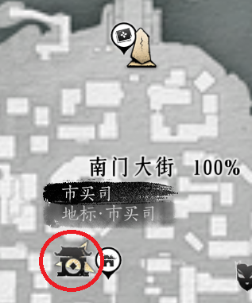
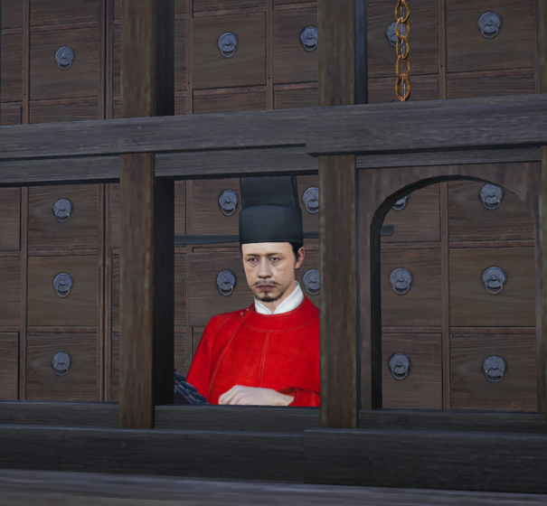
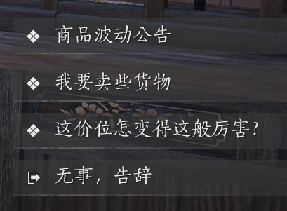
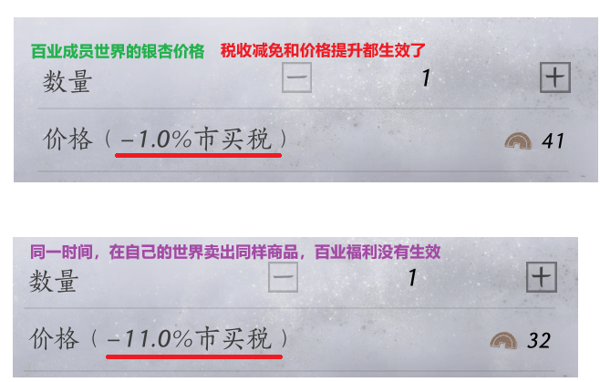
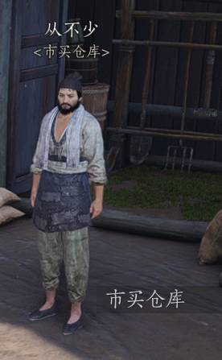
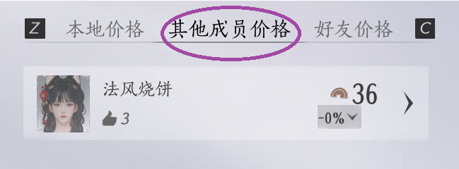
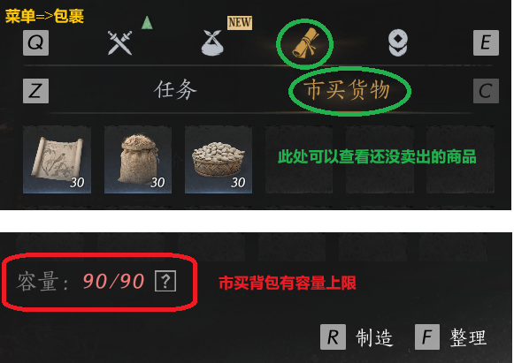

玩转江湖
市买小攻略
你需要做市买玩法吗？
如果你符合下面任意一点，这篇小攻略都适合你：
- 你是九流门的，需要每周赚越多越好的短陌钱来提升/保持门派地位。
- 你需要短陌钱买小摊食物/投票给你的梨园idol。
- 你需要赚短陌钱完成百业活跃度任务。
- 你就是想囤短陌钱，越多越好，管他呢。
- 你就是纯好奇，进来看看攻略。
请注意，你需要解锁开封地区才可以玩市买，还没解锁的需要把主线推进到开封噢。
什么是市买玩法？
每周，开封的市买司都会公布3种接下来一周价格浮动的、在开封贩售的商品。玩家可以通过低价买入（原价）、高价卖出的方式赚中间的价格差。
市买司
以下为市买司所在地：

下图为市买司NPC张祺越，跟他对话可以了解市价和卖出商品：

与张祺越对话：
- 商品波动公告：可以了解什么商品会有价格浮动，查询世界其他玩家的价格信息。
- 我要卖些货物：在所在的世界卖商品。（自己的世界就是本地卖，联机进入别人的世界就是按照别人世界的价格卖。）

商品波动公告
下面2张图教你看懂商品波动公告：
点击图片在新标签页打开原图，可使用浏览器缩放调整查看比例。
市买背包
在菜单(Esc menu)->包裹(Bag)->任务(Quest)->市买货物(Trading) 可以看到还没卖出的商品。

请注意，市买背包是有容量上限的，默认上限是10。如果要提升背包上限，有两种办法：
- 加入百业，在百业技艺->经商致富中选择背包上限提升，最多能提升20个商品容量。
- 在开封冯氏牙行（市买司隔壁），租赁房舍，提升背包容量。租赁多个房舍效果不会叠加，建议直接租最大的府邸。本人亲测同时租3个府邸也没有解锁成就，大家不用试了。
- 大府邸：提升60 （建议只租这个）
- 中府邸：提升30
- 小房子：提升15
什么时候买入卖出？
注意以下时间标注的是刷新的时间，24小时之内都可以进行对应行动。
（注：价格刷新比游戏每日登录刷新晚1个小时）
北京时间(UTC+8) | 美洲东部时间（EST/EDT） | 行动 |
|---|---|---|
每周六6:00AM | 每周五6:00PM EDT 每周五5:00PM EST | 商品/价格刷新，一周价格浮动开始。 进货。 |
每周一5:00AM | 每周日5:00PM EDT 每周日4:00PM EST | 游戏一周刷新，库存再次刷新。 可再次进货，尤其是本地价格浮动商品。 |
周一周二 | 周日周一 | 价格较低，不建议卖货。 |
每周三6:00AM | 每周二6:00PM EDT 每周二5:00PM EST | 高价开始出现，可以卖货。 |
每周四6:00AM | 每周三6:00PM EDT 每周三5:00PM EST | 高价持续出现，尽快卖货。 |
每周五6:00AM | 每周四6:00PM EDT 每周四5:00PM EST | 最后一天卖货，必须清库存。 |
每周六6:00AM | 每周五6:00PM EDT 每周五5:00PM EST | 上一轮的货物卖出截至。进入下周循环。 |
百业经商福利
什么福利？
如果你有加入百业，并且有足够的千奇珏（通过百业活跃度任务获得），那么不仅可以提升背包容量，还能在百业成员的世界里面卖货的时候获得税收减免和价格提升。注意这只对百业成员所在世界生效，不包括自己的世界。

百业市买玩法对应技艺：


怎么找百业成员卖货？
去百业驻地找到下图NPC“从不少”：

与从不少对话可以查看到百业成员的价格（需要背包里面有对应商品），也可以直接点击成员发送消息或者联机申请。

什么时候卖给百业成员更划算？
我们一下的数学计算的前提是百业技艺加成点满的情况：
- 售卖加成： +14.5%
- 税收减免： -10%
另外，卖给其他玩家（包括自己）会有11%的税收扣除。
以银杏价格为例子：
银杏价格浮动 （原价36） | 浮动后价格 | 其他玩家（包括自己） | 百业成员（福利拉满） | 备注 |
|---|---|---|---|---|
0% | 36 | 36 - 36 x 11% = 32.04 = 32 | (36 x (1 + 14.5%)) x (1 - 1%) = 40.8 = 41 | 即便是最低的0%, 卖给百业成员也不亏钱。 |
113% | 41 (40.68) | 41 - 41 x 11% = 36.49 = 36 | (41 x (1 + 14.5%)) x (1 - 1%) = 46.48 = 46 | 113% 以上卖给非百业成员也不亏了。 |
236% | 85 (84.96) | 85 - 85 x 11% = 75.65 = 76 | (85 x (1 + 14.5%)) x (1 - 1%) = 96.35 = 96 | 236%以上的百业成员就比300%的其他玩家利润大了，可以参考下一行。 |
300% | 108 | 108 - 108 x 11% = 96.12 = 96 | (108 x (1 + 14.5%)) x (1 - 1%) = 122.42 = 122 | 300%其他玩家 =236%百业成员 |
卖给世界玩家不亏的算法：
假设商品入手价为Y，我们要求的是价格涨幅到X%的时候，卖出的价格扣除掉11%的税收仍然大于等于Y，那么按照这个要求我们列以下公式（此处 * 为乘号）：
Y * X% - (Y * X% * 11%) >= Y
两遍公式简化可得： X% >= 1 / (1 - 11%)
所以 X% = 112.36%，向上取整 (ceiling) 113%
卖给百业成员的话，浮动百分率多少才比300%高？
假设商品入手价为Y，我们要解的是，百业成员价格浮动大于X%之后，比卖给世界其他玩家300%要更高。那么可以列一下公式（此处 * 为乘号）：
Y *300% - (Y * 300% * 11%) <= (Y * X% * (1 + 14.5%)) * (1 - 1%)
